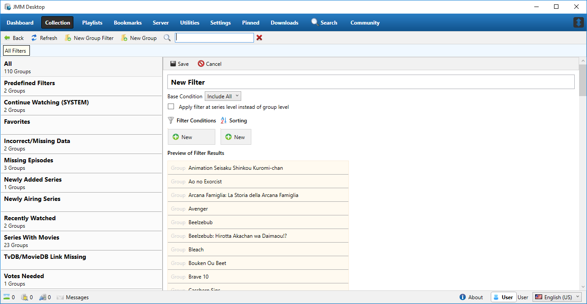
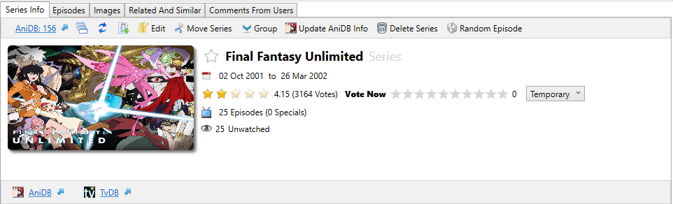
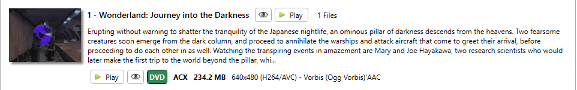
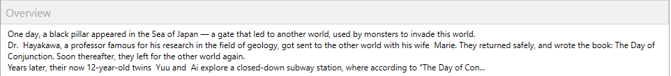

- Collections Tab
- Collection Overview
- Random Series
- Random Episode
- Filters
- What Are Filters
- Filter Basics
- Condition Types
- Operators
- Collection Overview
- Collection Overview
- Series Info Tab
- Episodes
- Images
- Related & Similar
- Comments From Users
- Links
- Downloads
- Documentation
- Changelog
- Support
- Contribute
- Chat With Us!

- Mobile Links
- Github Repo
- Dark Theme
- Light Theme
Collection Tab
When you first select the Collections tab, you'll see two columns, the left column contains a list of pre-made and custom filters while the right column contains the preview of the selected filter.
{kind=link}
Additionally, in the right column you have two options to provide random results for the selected filter, Random Series and Random Episode.
Random Series
When clicked, the Random Series button will display a random series from your collection. Additionally you can further fine tune the results by specifying the watch state and adding tags to the filter list by clicking the Edit button. Note that any tag filtering done on the User section under the Settings tab will supersede any tags you select as well as the initial results shown.
{kind=link}
Random Episode
When clicked, the Random Episode button will display a random series from your collection. Additionally you can further fine tune the results by and specifying the watch state and adding tags to the filter list by clicking the Edit button . Note that any tag filtering done on the User section under the Settings tab will supersede any tags you select as well as the initial results shown.
{kind=link}
What Are Filters
Filters provided more control over your collection allowing by allowing you to organize your collection in a variety of ways. The conditions and operators you set are carried out at a series level but shown at a group level. For example, if you have a group that consists of three different series with two of those series being marked as complete, a filter setup to show only Completed Series will include this group because at least one series in the group is complete.
It's important to remember that each filter you add will act as an AND operator meaning a series must pass all selected conditions to be added in the filter.
Filter Basics
Adding a new group filter is simple, simply click on New Group Filter right below the Playlists tab. From here you'll be prompted to enter the name for the group filter, once done you can now setup the filter options and different filter types.
{kind=link}
Base Condition - The base condition is the root filter which regulates every filter you add. It has two values, Include All or Exclude All which either include all groups based on filters or exclude all groups based on filters.
Apply Filter At Series Level Instead Of Group Level - Enabling this setting will allow filtering to happen within a group. For example if you have a filter set to show Completed Series than any group that contains multiple series with at least one completed series will show up as the group is considered complete. This means that your group filter for Completed Series contains series that are not technically complete. By enabling this option the group will still show up but any series that are incomplete will not.
Condition Types
Conditions allow you to define certain rules for your filter, JMM Desktop provides a wide range of conditions allowing you complete control over how you display your collection.
Air Date
Air date is the date a series FIRST started airing. You can filter out series that started before or after your selected date or you can select an air date that is within X days with X being the number you inputted.
Anime Type
This is basically a choice between TV Series, TV Special, Movie, OVA and Web.
Audio Language
Filter by the possible audio tracks in your collection, for example English or Japanese.
Category
Categories in JMM Desktop are pulled from AniDB where they are listed as tags for the series in your collection. You can select a single category or multiple categories for your filter.
Completed Series
A series is considered complete if the show has finished airing AND you have all the episodes for that series in you collection.
Episode Added Date
Refers to the date an episode was added to your collection. The date for a series will be the date the latest episode was added.
Episode Watched Date
Refers to the date an episode was watched. The date for a series will be the date the latest episode was watched.
Favorite
Favorites are an exception to the Apply Filter At Series Level Instead Of Group Level rule, as they apply at the group level only. You can toggle a group as being a favorite using the Star button when viewing a group in JMM Desktop.
Finished Airing
A seres is considered finished airing IF the series end date is before the current date.
Group
Group is an exception to the Apply Filter At Series Level Instead Of Group Level rule, as they apply at the group level. When using this filter you will be prompted to select an existing Anime Group from your collection. Keep in mind that this condition is evaluated in a special manner than other conditions. For example if you add a condition and select the group Macross Frontier, this group will always be included in the filter regardless if it matches any other conditions. Alternatively you can use this condition to always exclude a series or group that you don't want to appear. Lastly, this condition can also be used to manually build a watch list composed of series or groups.
Has Unwatched Episodes
A series will pass this condition if you have episodes that are not yet watched, and also available in your collection.
Missing Episodes
If Any subing group has released a new episode for a series in your collection, this condition will show that series as missing an episode. For example if Fansub Group A had released episode 13 of Bleach and you only had up to episode 12 from Fansub Group B, this condition would take effect.
Missing Episodes (Collecting)
This is the same condition as Missing Episodes with one difference, it will only look for releases from fansub groups you are collecting. For example if Fansub Group A had released episode 13 of Bleach and you only had up to episode 12 from Fansub Group B, this condition would not take effect as Fansub Group B had not released episode 13. However this condition will take effect if you are collecting from multiple fansub groups.
Rating - AniDB
This condition looks at the overall rating given by AniDB users. You can specify a value to filter by between 0 and 10. The actual rating value is the average value of permanent and temporary votes combined.
Rating - User
This is the same as Rating - AniDB except that it only looks at your own votes.
Series Added Date
This looks at the date a series was added to your local collection. It can be useful for finding what you have recently added.
Subtitle Language
Filter by the possible subtitle tracks in your collection, for example English or Japanese.
User Voted (Perm)
This is a simple condition to determine if you have voted permanently for a series. It would usually be used in conjunction with the Completed Series condition to determine which series are missing your votes.
Video Quality
Video quality looks at the original source of the files such as Blu-ray, DVD, HDTV and filters accordingly.
Operators
Operators are used in conjunction with conditions to provide more precise filtering of your collection. Not all operators are available for all conditions.
Include
Generally used on true/false conditions such as Completed Series and Missing Episodes.
Exclude
Opposite of Include.
Greater Than
Used for conditions which require a date input or value input such as Air Date or Rating - AniDB.
Less Than
Opposite of operator Greater Than.
Equals
Used ONLY in the Group condition to indicate that you want this group to always be shown.
Not Equals
Opposite of operator Equals.
In
For conditions where you can select more than one filter value. For example using the Category condition and selecting the categories action, mecha and school would show any series that at least have one of these as a category.
Not In
Opposite of operator IN.
In (All Episodes)
Same as operator In but will only evaluate to true if all episodes/files in a series match the criteria. This can only be used on conditions where this would make sense, such as Video Quality.
Not In (All Episodes)
Opposite of operator In (All Episodes).
Last 'X' Days
Used for conditions which are dates, and is evaluated relative to the current date. For example you can specify an Air Date of the Last '30' Days, which means it will only show you series which have started airing in the last 30 days
Collection Overview
After selecting your filter, you'll be presented with an overview of your collection divided into two panels. The left panel is the Filter Panel and displays the results of the selected filter while the right panel is the Series/Group Panel which displays in one of two formats depending on the selected item in the Filter Panel. You'll either see the series overview with information on that series or the group overview which lists some basic information on the initial series in that group in addition to listing every series in the group, below is an example of the group overview.
{kind=link}
Double-clicking on a series in a group will open that group showing only series in that group. Clicking the Back button on the navigation bar below the tab bar will take you back to your selected filter's results.
Series Info Tab
The Series Info tab is the first thing you'll see when viewing a series and is broken down into four different sections, Series Info, Next Episode Preview, Overview and More Information.
{kind=link}
Series Info
Like the name suggests, the Series Info section contains the main information on the displayed series. In addition you have various options that allow you to edit the series information to tailor it to your liking.
{kind=link}
Below the Series Info tab you have the information bar which contains links and options to edit various information for the selected series.
AniDB Series Number
This is the series number for the selected series as indexed on AniDB. Clicking on it will take you to the AniDB page for that series.
Pin Button
Clicking this will pin the series and take you to the Pinned Tab. Please note that pinned series are not permanent and will be unpinned when JMM is closed.
Refresh Button
This will refresh the displayed data and image, useful if the series data was updated on TvDB or you want to change the displayed series image.
Playlists Button
This will allow you to either add the series, all episodes or all unwatched episodes to a playlist. For information on setting up playlists, click here.
Edit Button
Clicking the edit button will allow you to edit the selected series Displayed Image and the series Title.
Clicking the Green Plus or the Red Minus next to the Displayed Image will allow you to make it bigger or smaller. Note this is a global setting and will change the size for every series Displayed Image. The displayed image is pulled from either download fanart or posters and can be changed in the Display Section in the Settings Tab.
The series Title can either be manually changed or replaced with an alternative title from AniDB. To do this click the Override button next to the series title and either input the title in the box on the right or select the Green Crossed Arrows to select one of the alternative names from AniDB.
Move Series Button
This will allow you to move the series into a new group, you can either chose an existing group or create a new group. Useful for moving series that have multiple movies or OVA's into one group.
Group Button
Clicking the group button will show the group the series is currently. You can click on the group name to be taken to the group listing showing every series in that group.
Update AniDB Info Button
This will update all the AniDB information for the selected series. Note that this does not happen instantaneously, it will be added to the AniDB commands and executed in the order it which it was received. You can see the profess of the AniDB commands by hovering your mouse AniDB Commands In Queue which is the third item on the menu bar at the bottom. Once it's down you'll need to refresh the series to see the results.
Delete Series Button
This will allow you to delete the series from your collection. When click you'll be presented with two options, Delete any parent groups if they are empty and Also delete all physical files. The first option will also remove the group the series is in provided there are no other series in that group and the second option will remove all files associated with that series from it's physical location.
Random Episode Button
Refer to the Random Episode section above.
Below the information bar the basic information about the series is shown.
Favorite Button
Located to the left of the series name, clicking this will favorite the series.
Series Name
By default it's the name of the series displayed in the first language you've selected under Language Preferences in the AniDB section in the Settings Tan.
Air Date
The air date of the series pulled from AniDB.
Rating
The series overall rating from ANIDB. You can add your own rating and mark it either temporary or permanent. Temporary ratings are used to indicate how you feel about the series as you're watching it while the permanent rating, and the one that gets added to the average on AniDB is for your overall rating on the series.
Total Episode Count
Show how many episodes and specials there are for the selected series. This does not count things like openings or endings or any other listing on AniDB that is not considered an episode or special.
Watched/Unwatched Count
Show how many episodes you've watched and how many you have left to watch.
At the bottom of the Series Info section you have the external links bar. Any external links for the selected series such as AniDB, TvDB, MAL or Trakt.tv will be shown here. However the links will only show up if you have linked it's corresponding account up in JMM Desktop.
Next Episode Preview
The next episode preview will show the next episode for you to watch based on your watched/unwatched data. The reason for the duplicate watched/unwatched and play button is for those who collect multiple releases from different groups. The top watched/unwatched and play button will play the next episode using the default group. The bottom watched/unwatched and play button allows you to select the next episode to watch by group, it will show every version of that episode you have and list the technical details for that file.
{kind=link}
Overview
The overview is the synopsis of the series, it's pulled directly from AniDB which has a strict policy of no spoilers in the synopsis unless the show is a sequel or movie. For longer synopses, you can click anywhere in the overview box to display the full synopsis
{kind=link}
More Information
The more information section contains alternative titles and tags for the series, all external links and a file summary of the files in the selected series.
{kind=link}
Titles
These are the alternative titles pulled from AniDB, this data is also used when selecting a title from the list when changing the series name.
Tags
These are the tags that have been applied to the series on AniDB. Hovering over a tag will give you a quick description of the tag and clicking a tag will filter your collection showing only series that have that tag.
TvDB and Other Non AniDB Links
JMM supports linking to other sites for importing and exporting data. As previously mentioned JMM uses AniDB for almost all anime related data but also uses TvDB for images and episode information. Additionally a Trakt.TV and/or a My Anime List account can be linked to sync watch status and rating. The Movie DB is also used for pulling information for Movies but is not fully supported at this time.
By default, if you've enabled importing/exporting of your data with one of the external sites like Trakt.TV or My Anime List, each series will have it's corresponding link auto linked. However, the system is not perfect and relies on users to fix any mistakes or create the link if it does not exist. By clicking the Search button you can create the link.
{kind=link}
You'll see a screen similar to this depending on which site you're creating the link for. The series name will auto-populate for you so just click the Search button. Most of the time you'll see a box called Community Recommendation, this means the series already has an approved link, click the Use This button to use that link. Now if there is not a Community Recommendation that means no one has submitted a link for that series, the good news is that if you select a link from the list, JMM will automatically submit that link and if approved, will automatically be used.
Something to keep in mind, only link a series using an English link. Most of these sites are only in English aways so this shouldn't be a problem but you'll notice in the above example there are links for the series in different languages. While they all go to the same page, click the one with the British flag to use as the link even if English is not your first language.
Click Here for more information on Community Recommendations.
File Summary
The file summary section shows the file information for the files in the selected series. The file listing is separated by fansub group and within a fansub group by the technical details of the files. Meaning if you started collecting HD releases of a show by Fansub Group A and then started collecting DVD releases by the same group, JMM Desktop will show two entries for Fansub Group A. You can sort this list by Quality Ranking or Release Group, the default is Quality Ranking. The summary type can also be changed from the default Quality/Release Group Details to Release Group Summary which will just show the files just by fansub group without the technical breakdown.
Custom Tags
Custom tags give you the ability to add personal tags such as a list of favorite series or series that need updating. The custom tag name is displayed in the middle with the add button on the right side. If you want to create a custom tag, click the Gear on the right side of the custom tag name. From here you can add the Tag Name and Tag Description as well as manage your custom tags.
Episodes
The episode section contains a list of all the episodes, credits, specials and trailers for the series based off the information imported from AniDB. You'll see a listing for the item even if it's not in your collection. Additionally, the item image and description is pulled from TvDB as AniDB does not support this type of data.
Right below the section title, you have three different listing options, Type, Availability and Watched State. The Type listing allows you to select the type of item you want to view, you can select either Episodes, Specials, Credits or Trailers. The Availability listing allows you to select what items to show, you can switch from All Episodes which will showing everything regardless if it's in your collection, Available Files Only which will only show items that are in your collection and No Files Available which will show any item in the series that you don't have a file for. The last listing, Watched State allows you to specify the watched state by selecting either All, Unwatched or Watched.
{kind=link}
As previously mentioned above, each item has its own listing with each listing having its own image, description set of options. Starting with the buttons to the right of the name we have the Watched State which you can manually toggle a Dark Eye means the file is unwatched and a Bright Eye means the file has been watched. The Play button will play the selected item while the Green Download button will take you to the Search Torrents section in the Downloads tab and display the available downloads for the item you selected. The Playlist button will allow you to add the selected item to a playlist. The Arrow Circle button will allow you to override the TvDB link for the item, this is handy for example if a link is off due to a special being labeled as an episode on AniDB and a special on TvDB.
{kind=link}
You can select the season the correct item is in, once down click the Use This button and it will override the auto linked item with your selection. If you have the setting enabled to send data, this link will be sent to JMM and if approved will be automatically done for other users in the future. Note, this information is from TvDB so if you're looking to override a special or movie link, it will be in what's labeled as Season 0. Last we have the Force AniDB Update button which will queue the series to have its information updated to match AniDB.
Each item has it's own file properties which can be viewed by clicking the Plus button to the right of the item's name. You'll be presented with a few more options and some basic information on the file, if you happen to have multiple files for the same listing, they will all show up. Like in the above menu, you have the Watched State button and Play button, the Open Folder button will open a window showing the files. The Delete button will delete the selected file so be careful while the Is Variation button will allow you to mark a file as a variation which will stop it from being reported as a duplicate or multiple file. The More Info button will open up a sub-menu showing the Hash, CRC32, SHA1, and MD5 values if available. The MyList button will forcefully add the file to your My List on AniDB, the Update Info button will download the file information only for the selected item from AniDB and the Rehash button will rehash the file for comparison. The AniDB button is a link that will show the file information on AniDB.
Images
The images section shows you an overview of every poster, fanart and banner downloaded for the selected series. The image source is shown above the image but most of the images shown were downloaded from TvDB. You can view a bigger version of the image by hovering your cursor over it. Each image have three options, View, Enable/Disable and Favorite, the View button will open the image in your default image viewing program, the Enable/Disable button toggles the image for display during the random rotation. The Favorite button will make the selected image the default for that series overruling the random image display.
{kind=link}
Related And Similar
The Related And Similar section will show additional series that are connected to the selected series as well as any series that share similar concepts as reported on AniDB. If you don't have the series already in your collection, you'll notice the image missing, clicking the Get Missing Data Now button will download the missing images. How a series is related to the selected series is shown below the Related Anime title, for Similar Anime you'll see an Approval Rating instead that's calculated when someone makes a recommendation, and other people up-vote those recommendations.
You also have a couple options available to you for each listed series which should look familiar. The AniDB Link will take you to the AniDB page for that series, the Pin button will pin the series, the Bookmark button will bookmark the series and the Download button will take you to the Search Torrents section in the Downloads tab and display the available downloads for the item you selected.
{kind=link}
Comments From Users
The comments section will show comments pulled from AniDB for that series. Trakt.TV users will also see comments from there and also have the ability to leave a comment on the series in JMM Desktop. Please use the Spoiler button if your comment has any spoilers so you don't accidentally ruin the series for other users.